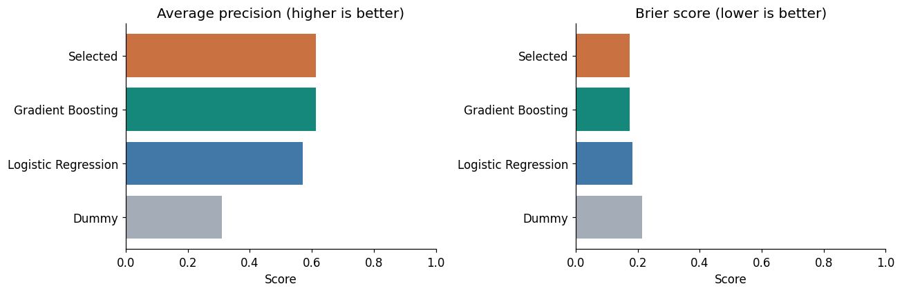
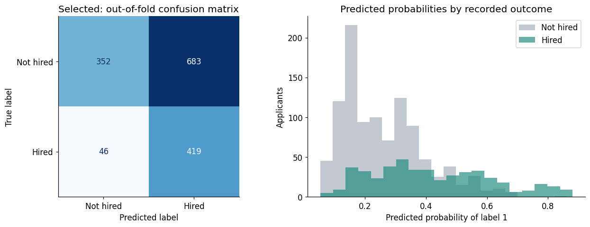
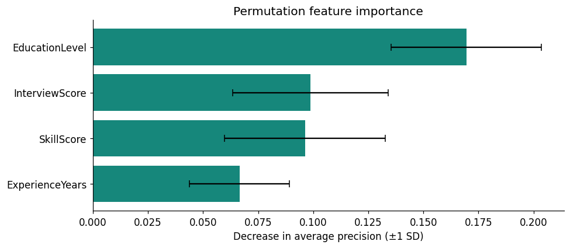
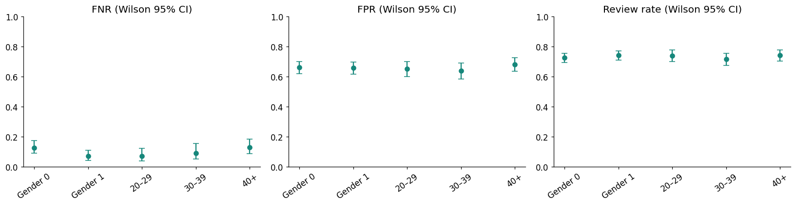
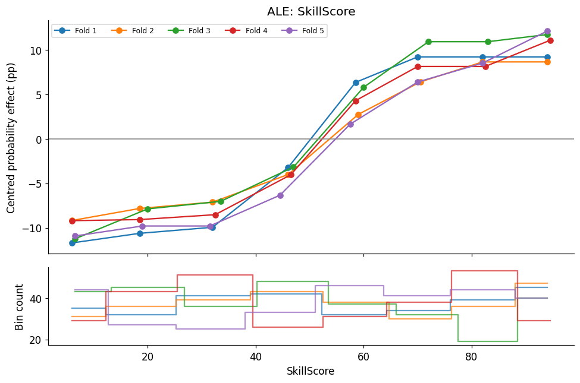
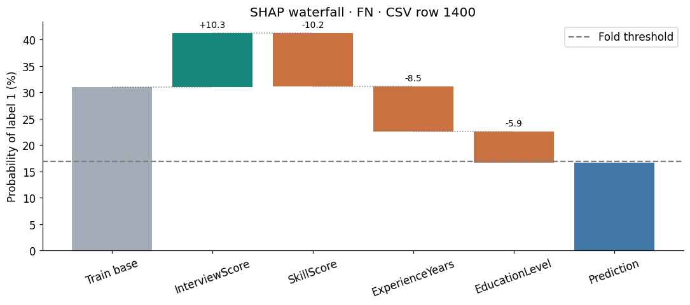
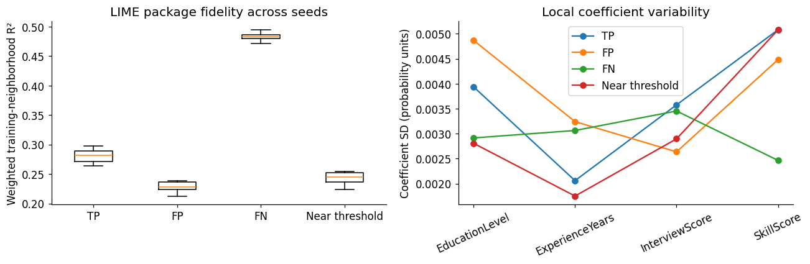
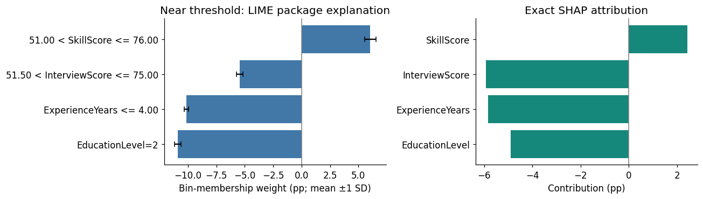

Average Precision สูงดี ส่วน Brier score ต่ำดี
ดาวน์โหลด PNG
Confusion matrix และค่าความน่าจะเป็นแยกตามฉลากจริง
ดาวน์โหลด PNG
AP ลดลงเท่าไรเมื่อสุ่มสลับตัวแปร แถบแสดง ±1 SD ไม่ใช่ confidence interval
ดาวน์โหลด PNG
FNR, FPR และสัดส่วนเสนอทบทวนรายกลุ่ม ช่วงนี้ไม่รวมความไม่แน่นอนจากการฝึกใหม่
ดาวน์โหลด PNG
รูปแบบคะแนนตามทักษะ แยก fold พร้อมจำนวนข้อมูลในช่วง; ไม่ใช่ผลเชิงเหตุและผล
ดาวน์โหลด PNG
แถว CSV 1400: จากค่าฐานชุดฝึก บวกผลตัวแปรจนถึงค่าทำนาย พร้อมเส้น threshold
ดาวน์โหลด PNG
Weighted R² จากแพ็กเกจ lime บน neighborhood ที่ใช้ fit และ SD ของน้ำหนักข้าม 10 seeds
ดาวน์โหลด PNG
ซ้ายคือน้ำหนักการอยู่ในช่วงค่าจากแพ็กเกจ lime จริง; ขวาคือ SHAP attribution ทั้งสองใช้คำถามอ้างอิงต่างกัน
ดาวน์โหลด PNG